IEOR Golden Jubilee · 3 September 2026
The mark is out.
Teachers' Day at the IEOR building. The department unveiled the mark for its fiftieth year, then carried the banner out in front of the people who fill the halls.
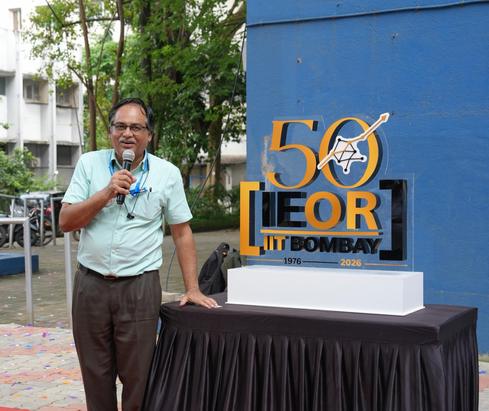
The mark.
Fifty years, set in gold and black: IEOR, IIT Bombay, 1976 to 2026. It stood on the red carpet first, then stayed for photographs against the department wall.
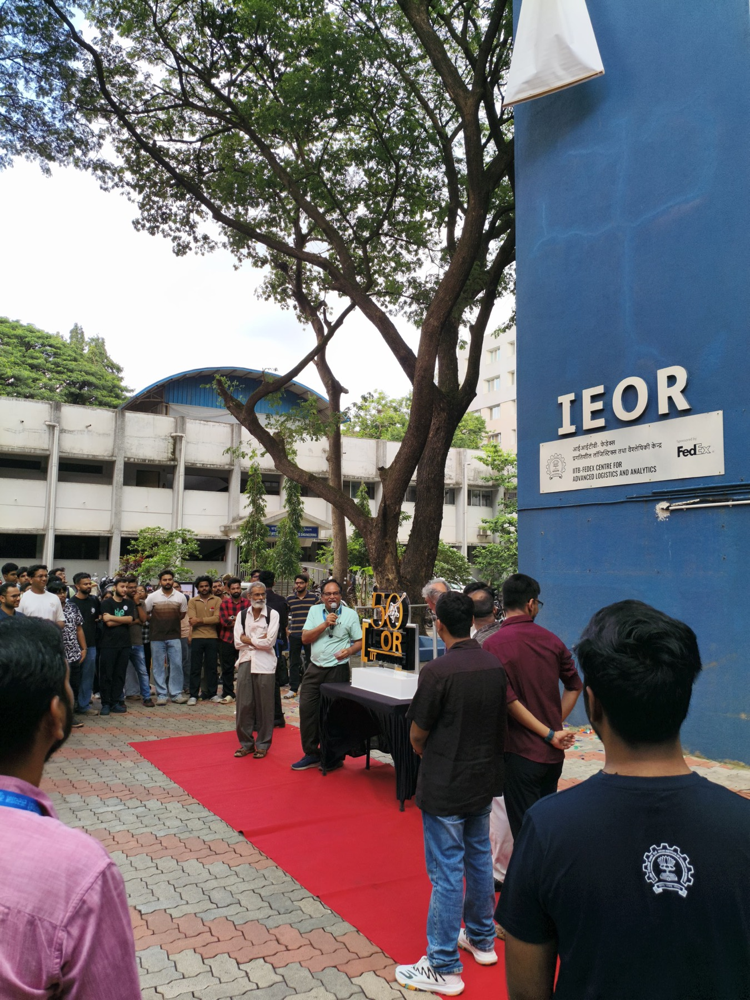
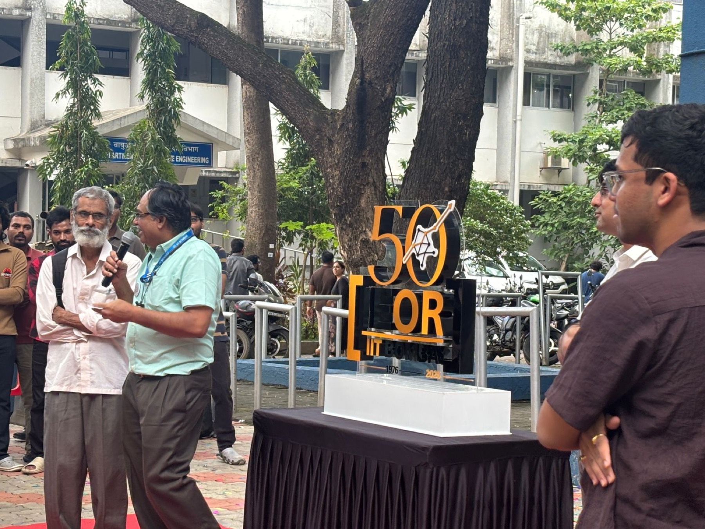
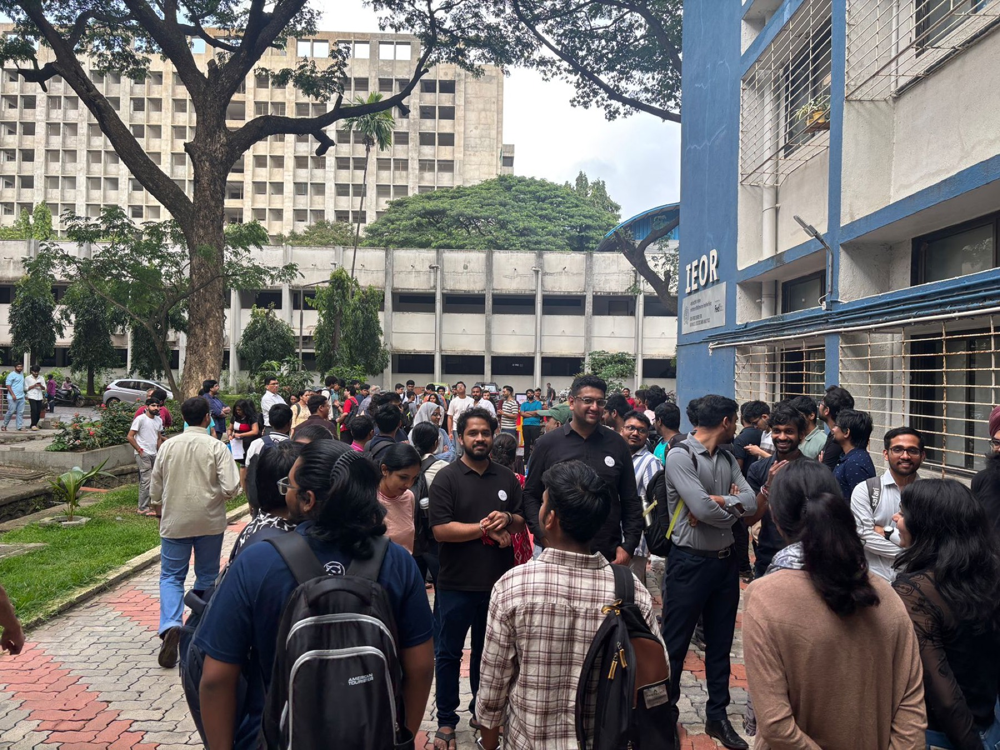
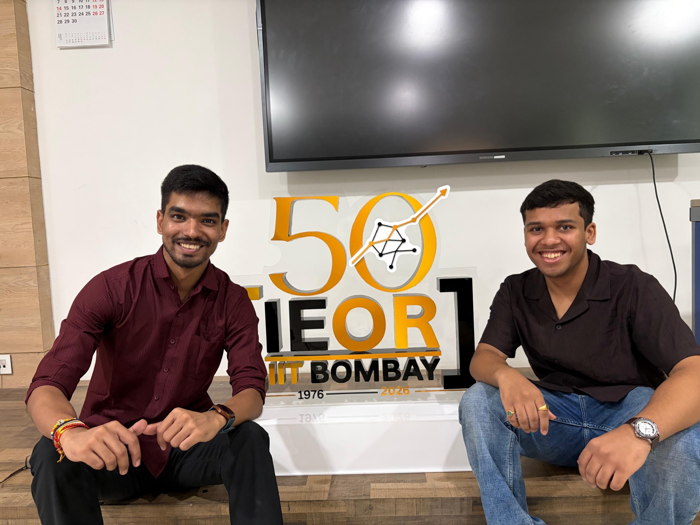
The hall.
The lecture hall was full. The mark was on both screens. A small model of the building sat on the front desk, and the rows ran back to the doors.
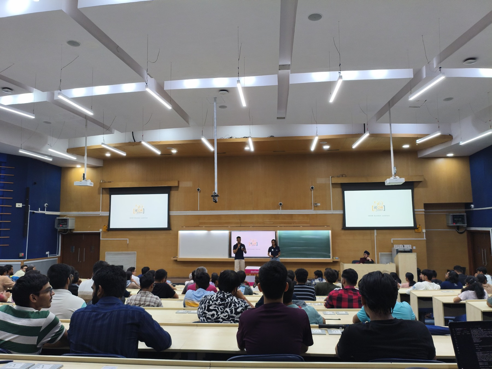
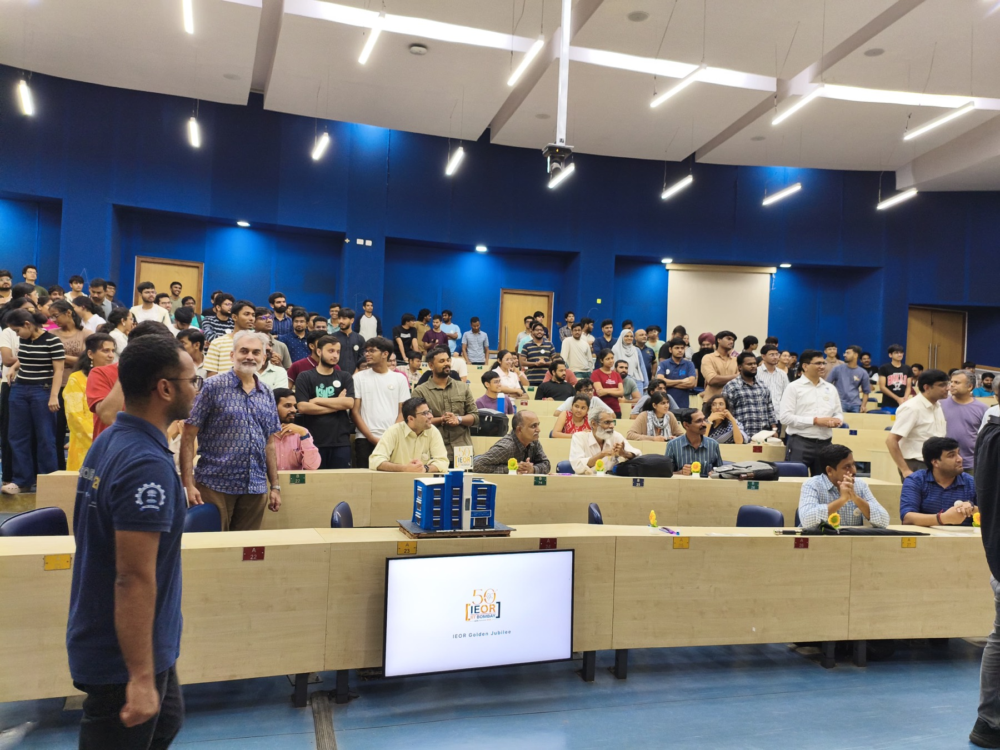
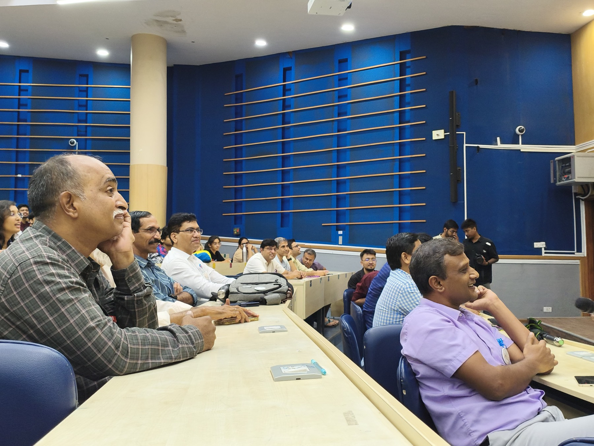
The banner.
Fifty years of legacy, held out by a line of people, then hung on the blue wall of the department.
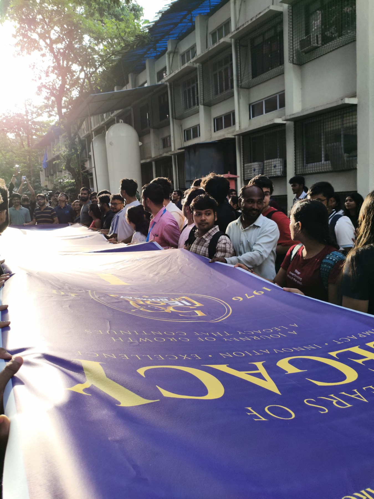
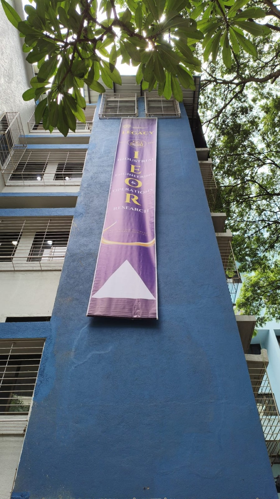
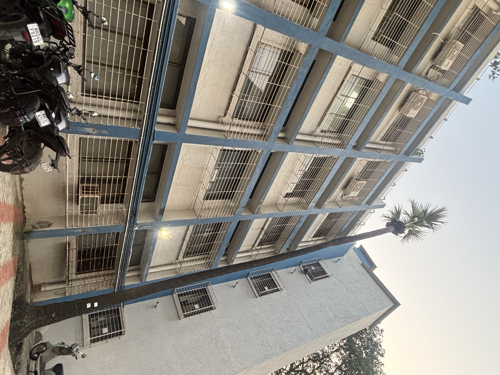
The Reveal opened the year. The Grand Alumni Meet is 21 and 22 November 2026 at IIT Bombay.
Alumni Meet schedule